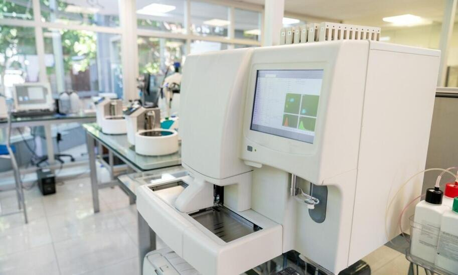
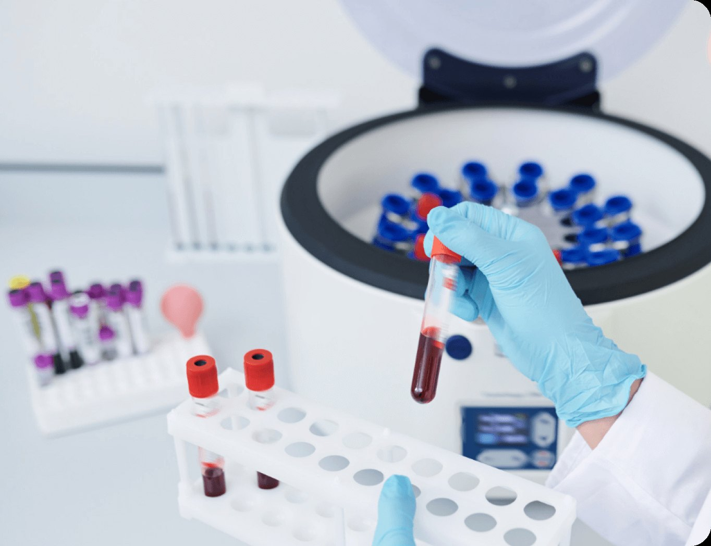

LAB IN-CHARGE
Dr. Hira Shahid
MBBS, FCPS (Haematology) — oversees testing quality and personally reviews abnormal results before release.
A neighbourhood lab with hospital-grade discipline — built in Lahore, for Lahore.

PrimeLab runs fully automated analysers for haematology and biochemistry, with every sample barcoded from collection to report. Two-level internal quality controls run every morning before the first patient sample is touched — if a control fails, the analyser stops, not the standard.
The people behind your report.
MBBS, FCPS (Haematology) — oversees testing quality and personally reviews abnormal results before release.
MLT, 11 years in diagnostic labs — leads biochemistry and the morning quality-control run.

Certified phlebotomist — trains and audits the home-visit team across Lahore.